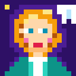

Wednesday Debrief & C1 Article Studio • 25 Nov 2026

Oksana H. • Spoken Fluency & C1 Writing
Oksana H. • B1/B2 General & Dental English
Glimmers, Daily Triggers & Finding the Good in Ordinary Days
Your live scratchpad from Wednesday’s Glimmers lesson paired with comparison accuracy (as bad as in the UK), stop + -ing, every day vs everyday, 4 Key Word Transformations, and a Cambridge C1 Part 2 Article prompt.
Source Lesson: ESL Brains (Glimmers · Triggers vs Small Joys)Grammar Focus:as + adj + as, stop + -ing & Phrasal PrepositionsWriting Task: C1 Part 2 Article (220 to 260 words)
1. Active Speaking Warm-Up: 2-Minute Long Turn
Active Voice First
Jot down 4 single trigger words down the margin during 1 minute of prep, then speak for 2 minutes straight.
Describe a small habit, item, or tradition that always brightens up an ordinary day.
what it is and how often it happens
why it helps you take your mind off work or stress
whether you have held on to it from earlier in your life
how small moments like this affect your wider outlook
1. The 1-Minute Note SecretWrite only 4 single trigger keywords; no full sentences.
2. The 3-Act Story ArcPast Context (30s) → Sensory Snapshot (45s) → Reflection / 'So What?' (45s).
3. Cambridge AnchorKeep talking smoothly until halted; deepen your reflection.
Preparation Time (1 Min)
01:00
2. Live Class Scratchpad (25 Nov 2026)
Captured live during today’s session. Click Self-Test Mode to blur the explanations and test your recall.
Comparisons
as + adjective + as
“Is the weather in Bochum as horrible as it is here in the UK?”
No, it isn’t as bad as the UK → No, it isn’t as bad as in the UK (keep parallel prepositions!).
Triggers & Stress
trigger • fight or flight • disturbing
Origin: A trigger is the part of a gun (pull the trigger).
Modern examples:a notification on your phone, true crime podcasts, disturbing news.
fight or flight response / instinct: natural surge to confront or run away from danger.
Gerund Habit
stop + -ing
Your example:“I stopped having my coffee first thing.”
Rule:stop + -ing means quit a habit; stop + to do means pause in order to do something else.
Reflection & Outlook
reflect on • optimist / pessimist / realist
“I reflected on it over the weekend.” (Always reflect ON, never about.)
“When I reflect on my life, I realise I should show gratitude more!”
Mindset trio: optimist, pessimist, a realist • routine / balance / a small reminder.
Memory & Meaning
hold onto • Christmas ornaments • traditions
“Any item from your childhood that you’ve held onto?”
Key nouns:Christmas ornaments, traditions, a small reminder.
Verb nuance:they act aggressively.
Brightening the Day
take your mind off • brighten up your day
take your mind off sth: distract yourself from stress or worry.
Class laugh:“How do you brighten up your husband’s day?” → “He has to brighten up MY day!”
Your line:“It always brightens up my day when I come home to an empty house.”
Idiom & Spelling
savour the moment • mundane • every day
Slow down and smell the roses = savour the moment.
mundane = routine, boring:go to work everyday → go to work every day (two words = each day; one-word everyday goes before a noun).
Topical Lexis
preppers & emergency supplies
preppers: people who stock emergency supplies in advance.
Question:“Have you bought water and tinned food yet? Cash: 300 to 500 euro.”
3. Grammar & Preposition Repairs
Live Upgrade
Core Patterns: Parallel Comparisons & Time Adverbials
not as [adj] as IN [place] | stop + -ing (quit habit) | reflect ON | go to work every day (2 words)
1. Repair: “No, the weather here isn’t as bad as the UK.”
“No, the weather here isn’t as bad as in the UK.” (Compare weather in one place with weather in another.)
2. Repair: “Life gets very mundane when we have to go to work everyday.”
“Life gets very mundane when we have to go to work every day.” (Use two words every day for “each day”; reserve one-word everyday for adjectives like everyday stress.)
3. Repair: “I reflected about our conversation over the weekend.”
“I reflected on our conversation over the weekend.” (Always pair reflect with on.)
4. Meaning Check: “I stopped to have my coffee first thing” vs “I stopped having my coffee first thing.”
“I stopped having my coffee first thing” means you gave up that morning habit. (Stopped to have coffee would mean you paused what you were doing in order to drink a coffee.)
4. Key Word Transformations (Glimmers Pack)
3 to 6 Words • Unchanged Key Word
Complete the second sentence using between 3 and 6 words, including the key word unchanged.
Item 1 · Phrasal IdiomMIND
Going for a quiet walk helps me stop thinking about work. Going for a quiet walk helps work.
take my mind off (4 words) / to take my mind off (5 words)
Item 2 · Quit HabitSTOPPED
I no longer drink coffee as soon as I wake up. I first thing in the morning.
I have kept these childhood ornaments since I was young. These are childhood ornaments that I for years.
have held on to (4 words) / have held onto (3 words)
Item 4 · Parallel ComparisonAS
The weather here is slightly better than the weather in the UK. The weather here is not the UK.
as bad as in (4 words)
5. C1 Writing Exam Prompt: Part 2 Article (220 to 260 words)
Optional Writing Studio
Articles wanted: Finding the Good in Ordinary Days
Modern life can feel full of daily triggers, from endless phone notifications to stressful news, while work and household routines easily start to feel mundane. Yet psychologists say we can train ourselves to notice “glimmers”, those quiet, everyday moments that calm us down and brighten up our day.
Write an article for our website in which you explore:
what everyday pressures or triggers affect people’s mood most today
what small “glimmer” or routine genuinely helps you take your mind off stress
whether holding on to small moments and traditions is enough to change how we experience daily life.
Write your article in 220 to 260 words.
Click any phrase below to check it off as you weave it into your draft (auto-saved locally in your browser):